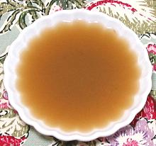

|
Elizabethan StockEngland | ||||
| Makes: Effort: Sched: DoAhead: |
3-1/2 qt *** 2-3/4 hrs Yes |
This stock is quite different from those made today - with a little of the Medieval still in it, combined with the Elizabethan fondness for things sweet. See Note-6 for background. | |||
|
|
4-1/2 1 3-1/2 ------ 14 2 2 3 4 ------ 1/2 8 1/2 ------ 1 1-1/2 1/3 |
# qt --- oz --- c c --- c t t |
Chicken parts (1) Lamb Shank (2) Water -- Onion mix Onions Rosemary sprigs Bay Leaves Mint sprigs Parsley sprigs -- Sweet mix Almonds, Blanched Dates (3) Currants (4) ------------ Wine, White Salt Pepper |
The almonds make the stock a bit murky, but if you must have it clear, they will settle out. Think before using this stock for any cuisine save Elizabethan or earlier English. Make - (2-3/4 hrs - see Note-1)
|